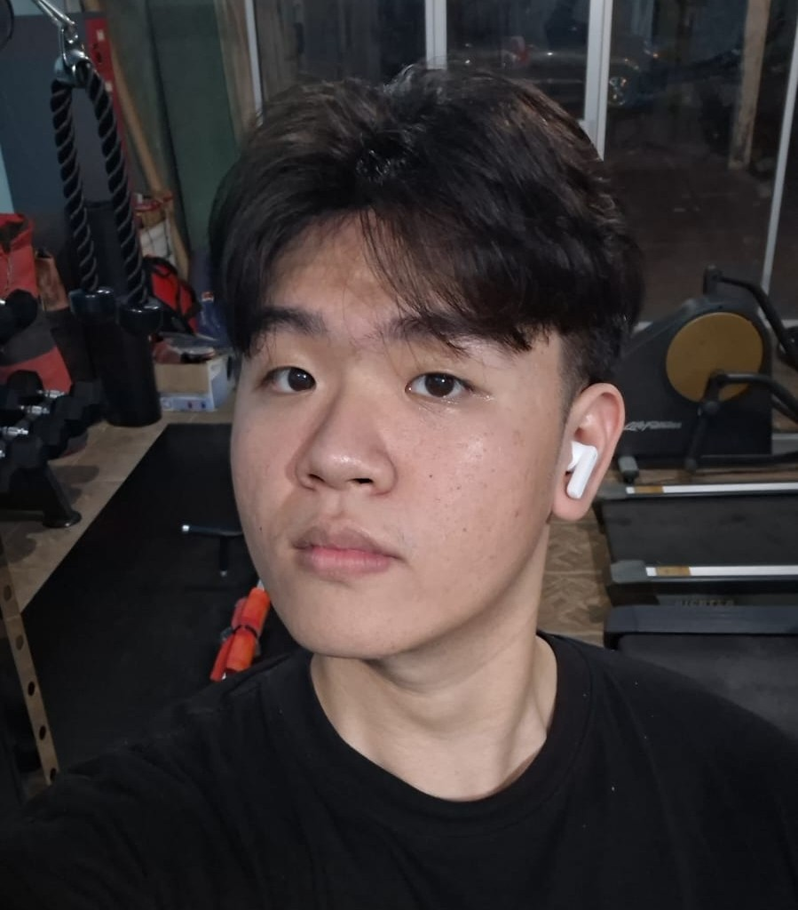
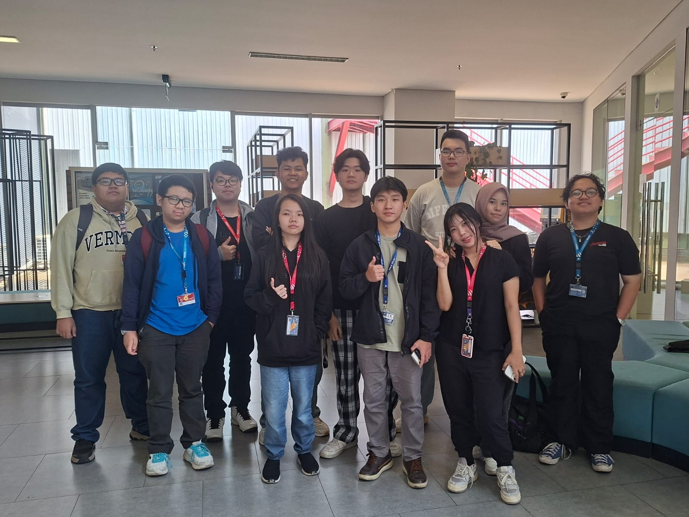
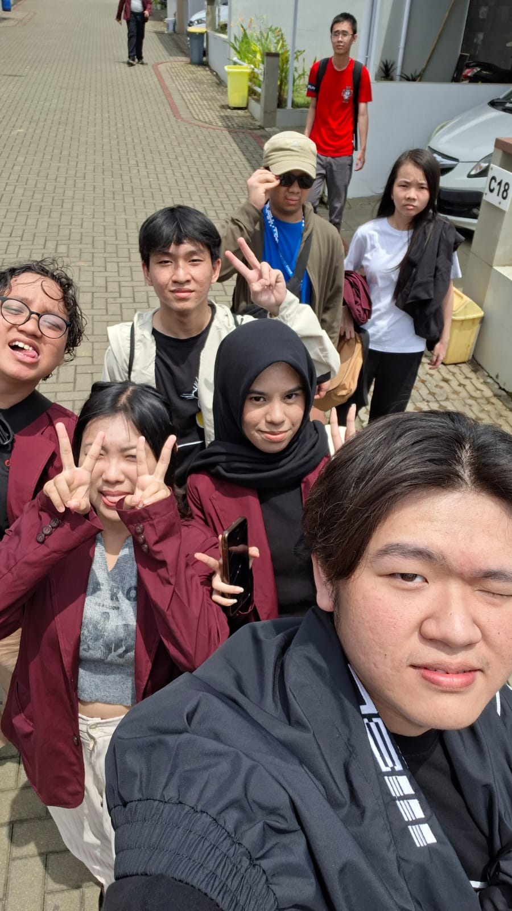
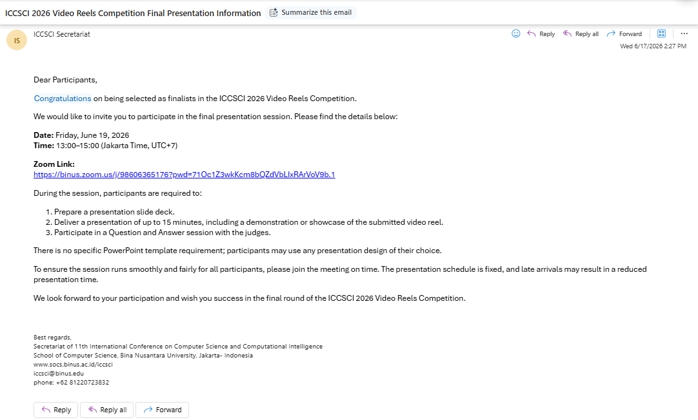

💻
Website Portofolio Pribadi
Website portofolio dan perkenalan diri ini, yang saya rancang dan bangun sendiri untuk menampilkan profil, keahlian, pengalaman, dan pencapaian saya secara interaktif.
Mahasiswa Computer Science di BINUS University yang kini berfokus pada Internet of Things (IoT), menyatukan software engineering, frontend, backend, data, dan web development untuk menghubungkan perangkat menjadi solusi nyata.

OGHalo! Saya Oliver Glen Melvin Suwandi, mahasiswa Computer Science di BINUS University yang saat ini berfokus pada Internet of Things (IoT). Saya tertarik menggabungkan perangkat keras dan perangkat lunak menjadi sistem yang saling terhubung dan bermanfaat.
Saat ini saya sedang mencari kesempatan magang agar dapat menerapkan ilmu yang saya pelajari, belajar dari praktisi berpengalaman, dan berkontribusi pada proyek nyata.
Berfokus pada Internet of Things, didukung berbagai bidang engineering di bawah ini
Fokus utama saya: menghubungkan perangkat, sensor, dan sistem menjadi solusi cerdas yang terintegrasi dari perangkat keras hingga perangkat lunak.
Merancang dan membangun perangkat lunak yang andal, terstruktur, dan mudah dikembangkan.
Membangun antarmuka yang responsif dan pengalaman pengguna yang mulus.
Merancang API, logika server, dan integrasi antar layanan yang rapi.
Mengelola alur dan penyimpanan data agar siap dianalisis dan dimanfaatkan.
Mewujudkan ide menjadi situs web yang fungsional dan menarik.
Berikut beberapa proyek yang pernah saya kembangkan
Website portofolio dan perkenalan diri ini, yang saya rancang dan bangun sendiri untuk menampilkan profil, keahlian, pengalaman, dan pencapaian saya secara interaktif.
Aplikasi berbasis Augmented Reality untuk memperkenalkan dan melestarikan budaya Indonesia, khususnya bagi generasi muda dan wisatawan domestik. Cukup lewat kamera smartphone, NusaLens menghadirkan pengalaman belajar yang interaktif dan imersif tanpa perangkat tambahan yang mahal.
Proyek tim sederhana berupa kalkulator ilmiah yang dibangun menggunakan bahasa C, mencakup operasi matematika dasar hingga fungsi ilmiah.
Prototype aplikasi mobile yang membantu pengguna menemukan resep dari sisa bahan makanan yang mereka miliki. Setiap resep dilengkapi waktu memasak, daftar bahan, dan langkah-langkah lengkap, sekaligus merekomendasikan masakan yang lezat dan bergizi.
Sarung tangan pintar berbasis IoT dan kecerdasan buatan yang menerjemahkan gestur bahasa isyarat menjadi teks secara real-time untuk membantu komunikasi penyandang tunarungu dan tunawicara. Memanfaatkan sensor flex dan MPU6050 dengan metode Fuzzy Logic, sistem ini mencapai akurasi hingga 85%.
Penelitian research methodology yang mengusulkan skema multipath teroptimasi (oMPS) untuk jaringan generasi berikutnya. Diuji melalui simulasi NS-3, skema ini mengatasi kelemahan protokol jalur tunggal seperti packet loss, jitter, dan latensi tinggi pada kondisi kepadatan pengguna dan mobilitas tinggi, guna mendukung aplikasi 6G URLLC.
Kegiatan dan pengalaman yang pernah saya jalani

BINUS University
Menjadi mentor pribadi bagi 10 mahasiswa baru B29 sekaligus mentor kelas besar LC75 B29, membantu mereka beradaptasi dengan kehidupan kampus.

KOLMAS Regency
Berpartisipasi sebagai relawan dalam kegiatan penanaman pohon untuk mendukung penghijauan lingkungan.
Beberapa pencapaian yang pernah saya raih

Klik untuk lihatVideo Reels Competition
Bersama tim terpilih sebagai finalis untuk mempresentasikan perangkat IoT buatan kami, Posture Corrector Device.
Oracle Dev Gym
Sertifikat penyelesaian kelas fondasi basis data untuk pengembang.
Pernah dan sedang belajar pada institusi berikut
BINUS University
Fokus pada rekayasa perangkat lunak dan pengembangan aplikasi web.
SMAK Tri Tunggal Semarang
Mencari teman, membangun koneksi, dan belajar dasar dalam Science di bangku SMA. Lalu merasa tertarik pada dunia teknologi setelah mengikuti mata pelajaran Computer. Setelah lulus mulai menekuni lebih dalam hingga akhirnya memilih jurusan Computer Science.
Saya terbuka untuk kesempatan magang, kolaborasi, atau sekadar berdiskusi.